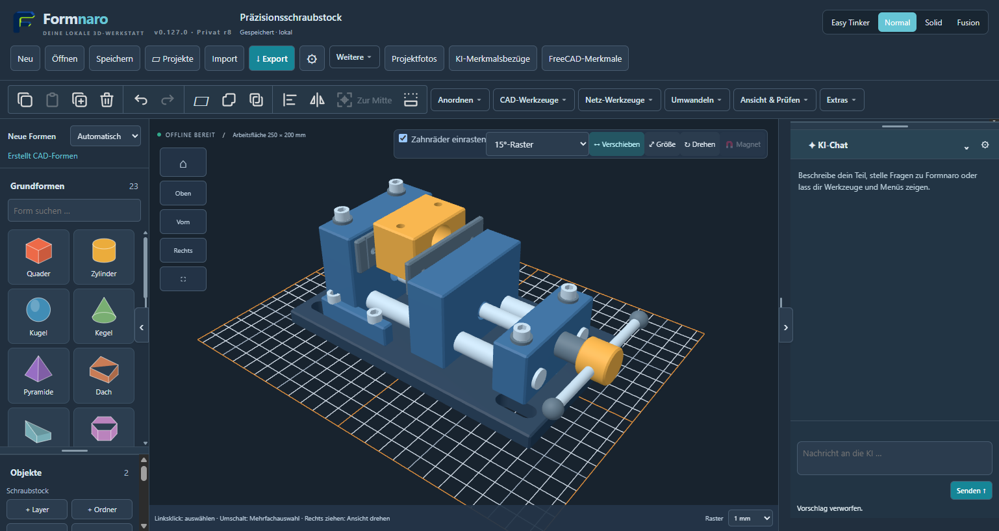

3D CAD for
your workshop.
Design parts, repair meshes and build moving assemblies. Formnaro runs locally on Windows.

Example models and workbenches
Sample project · Mechanisms
ATLAS-5 in motion
This five-axis gantry mill shows what joints and couplings can do. The tool head travels, the rotary table turns, and the pinion follows the tilting cradle through a 48:20 gear coupling.
- 144 parts
- 78 joints
- 5 axes
The clip shows the joints moving in Formnaro. Open the sample project to move the axes yourself.
Download the editable sample ↗Four modes in practice
Captured in a Formnaro development build. Click an image to see its toolbar at full size.





Practice Show Mode
See how AI makes a change to the model you are working on. The demonstration runs step by step on a separate project copy. Review the preview and choose whether to apply the result to your open model.
Explore Formnaro
STL-to-STEP and design tools
STL to CAD · STL → STEP
Keep designing from an STL.
Have a bracket as an STL and need to add another hole? An STL describes the surface with triangles. The local converter tries to reconstruct CAD surfaces such as planes and cylinders, so you can edit suitable models as solids.
Check locally first
Formnaro prepares a locally checked STEP candidate. A valid CAD preview can be ready without an AI request.
Compare the result
Overlay the original and the result to inspect the displayed deviations in millimeters. The converter also checks the resulting STEP by reading it back.
Continue in CAD
Save the result as STEP or preview it before bringing it into your Formnaro project. Conversion runs locally.
The STL does not contain the original sketches or feature history. Open or damaged meshes may need repair first.
Converter guide on GitHub ↗Tools for your project
- Design partsDraw dimensioned sketches and extrude them into solids or cutouts. Add holes, fillets, chamfers, and patterns. Loft between profiles or sweep a profile along a path. Control dimensions with parameters and formulas.
- Edit meshesFind open edges in imported meshes and close suitable holes. Select individual triangles or entire surface regions, reduce the triangle count, or smooth selected areas. Protect regions from changes and compare the result with the original.
- Drawings and bills of materialsCreate views, sections, and dimensions, then export drawings as PDF, SVG, or DXF. Record material and mass in a CSV bill of materials and show how an assembly fits together in an exploded view.
- Exchange modelsUse STEP to exchange CAD solids, STL and 3MF for 3D printing, and OBJ and GLB/glTF to continue working with meshes and 3D views.